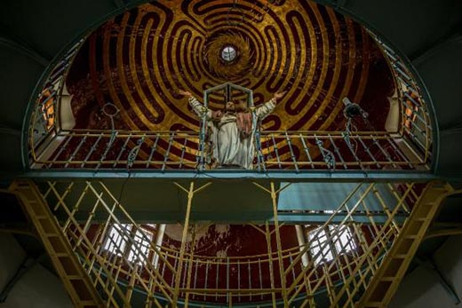

Castelul Iulia Hasdeu
Templul de la Câmpina închinat Iuliei Hasdeu a fost locul de refugiu pentru Bogdan Petriceicu Hasdeu, după moartea unicei sale fiice. Despre Castelul din Câmpina se spune că ar fi unul dintre cele mai bântuite din ţara noastră. Conform legendelor, noaptea, Iulia Hasdeu poate fi auzită cântând la pian, în aplauzele tatălui sau. Extrem de afectat de moartea Iuliei, la care ţinea foarte mult, Hasdeu a construit, la Câmpina, între 1894 şi 1896, un edificiu straniu, menit să-i mijlocească tatălui îndurerat comunicarea cu fiica sa, din Ceruri, prin şedinţe de spiritism. A fost denumit Castelul Magului sau „Templul Spiritist de la poalele Carpaţilor”. Circumstanţele construirii acestui edificiu nu sunt clare nici astăzi. Atât se ştie că Hasdeu ar fi primit planurile de construcţie ale castelului de dincolo de moarte, de la fiica sa, în urma unei şedinţe de spiritism.
O descriere a castelului, din perioada în care găzduia practicile oculte organizate de Hasdeu, a fost realizată de scriitorul Ion Luca Caragiale, în urma unei vizite la Câmpina pe care a efectuat-o în 1896. Dramaturgul rememora, într-un eseu, detaliile edificiului:
"Păşim pragul şi ne aflăm sub domul înalt din centrul clădirii. În mijlocul sălii circulare, stă liniştit un stâlp masiv de zidărie, de culoarea marmorii trandafirii. În partea din spate a stâlpului, împotriva uşii de intrare e o scară care suie la celelalte două. În rând cu galeria, deasupra stâlpului pe care se reazimă scările, este un pod susţinut de stâlpi subţiri de fier. Deasupra acestui pod stă sub domul albastru, statuia Mântuitorului, o dată şi jumătate mărimea naturală. Statuia este de lemn, şi colorata, dupa stilul evului mediu, este o operă de rară frumuseţe a sculptorului Casciani din Paris. Mântuitorul se ridică deasupra unor nouri, către cer cu braţele deschise, cu privirea aplecată spre pământul pe care-l binecuvântează cu amândouă mâinile. Din ochi îi pică lacrimi, în mâini şi în picioare se vad urmele cuielor şi pe frunte ale ghimpilor. Divinul Fiu se înalţă cu faţa către isvorul luminii, către Răsărit”
Vizitatorii care trec pragul muzeului pot admira portretele membrilor familiei Hasdeu, obiectele familiei Hasdeu, fotografii și documente originale, mobilierul vechi de peste un secol, manuscrise și colecții ale revistelor conduse de marele filolog ori la care acesta a colaborat, ediții princeps ale cărților savantului, precum și tablouri valoroase semnate de pictori renumiți precum Sava Henția, Nicolae Grigorescu, G.D. Mirea sau Diogene Maillart. De asemenea, în ansamblul expoziției un loc important îl ocupă preocupările spiritiste ale lui B.P.Hasdeu.
Sala 1 - Salonul de primire al doamnei Iulia Hasdeu, soția scriitorului, unde se află bustul de marmură al acesteia;
Sala 2 - Sufrageria, cu portretele familiei pictate în medalioane, pe pereții camerei;
Sala 3 – Templul Castelului, cel mai înalt turn, care are un pronaos cu oglinzi paralele și un altar. În mijlocul turnului, unde se urcă pe trepte metalice, se află o statuie a lui Iisus, sculptată de Raphael Casciani. Războiul, cutremurele și ignoranța umană au afectat de multe ori castelul, dar statuia lui Iisus nu a fost niciodată atinsă. În această sală se pot observa și cele trei camere, cea albastră, cea roșie și cea verde, culori date de vitralii.
Sala 4 - Biroul de lucru al lui B.P.Hasdeu, în care se află portretele savantului, soției și fiicei lor Iulia.
Sala 5 - Camera cu cale, dedicată Iuliei Hasdeu, unde se află păpușa Iuliei, o sculptură, bustul Iuliei Hasdeu, de Ioan Georgescu, din marmură de Carrara, realizat în 1890. De asemenea, aici se afla jurnalul și caietul de matematică al Iuliei.
Sala 6 - Camera obscură, unde aveau loc ședințele de spiritism, care are un porumbel de piatră, o lunetă astronomică, un sfeșnic și o statuetă a lui Iisus.